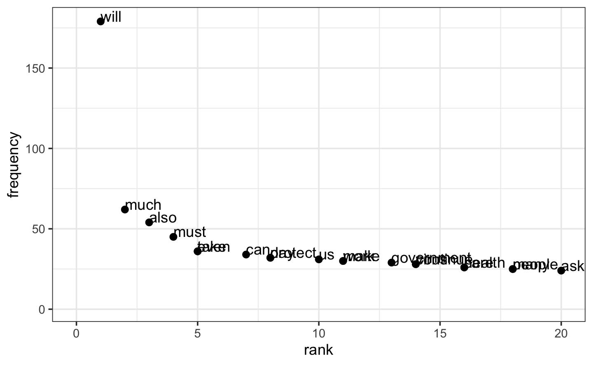
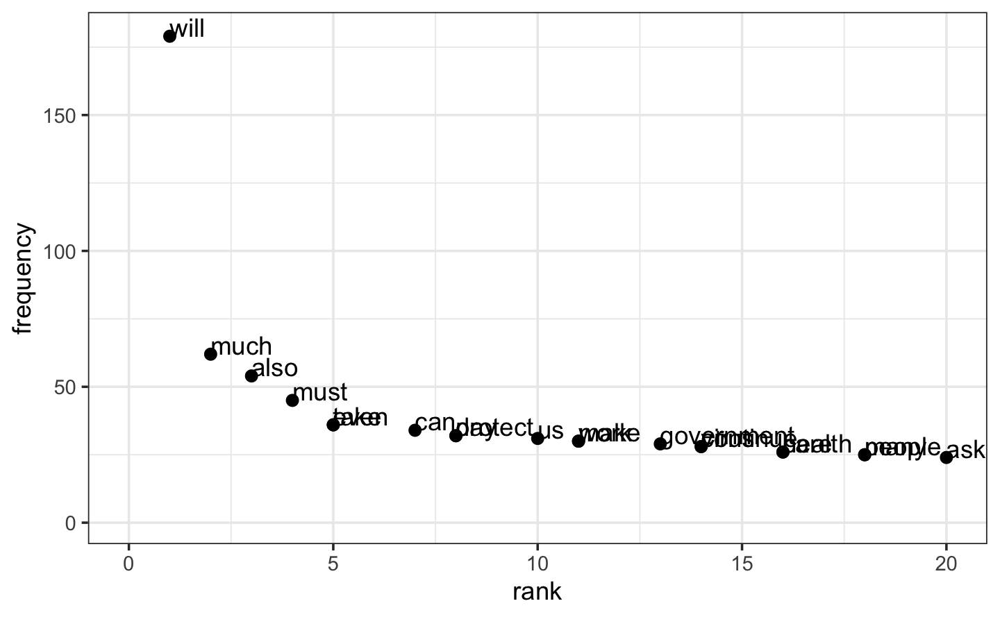

Chapter 3 EDA
##Data Acquisition
3.1 Boris Johnson
## Tokenization
corpus_boris <- corpus(boris)
summary(corpus_boris) ###number of tokens and token types| Text | Types | Tokens | Sentences |
|---|---|---|---|
| text1 | 266 | 577 | 21 |
| text2 | 409 | 1170 | 49 |
| text3 | 405 | 1165 | 42 |
| text4 | 406 | 1175 | 51 |
| text5 | 321 | 904 | 1 |
| text6 | 357 | 946 | 42 |
| text7 | 300 | 729 | 33 |
corpus_boris <- tokens(corpus_boris, remove_numbers = TRUE, remove_punct = TRUE, remove_symbols = TRUE, remove_separators = TRUE)
## Lemmatization
corpus_boris <- tokens_replace(corpus_boris, pattern=hash_lemmas$token, replacement = hash_lemmas$lemma)
## Cleaning
corpus_boris = corpus_boris %>%
tokens_tolower() %>%
tokens_remove(stopwords("english"))
## Document-Term Matrix DTM
corpus_boris.dfm <- dfm(corpus_boris)
View(corpus_boris.dfm)
## TFIDF no point when just on document, maybe add when combining texts
corpus_boris.tfidf <- dfm_tfidf(corpus_boris.dfm)
View(corpus_boris.tfidf)
## Cloud of Words
textplot_wordcloud(corpus_boris.dfm, color=brewer.pal(8, "Dark2"))
## Lexical Divesity Token Type Ratio TTR
N.boris <- ntoken(corpus_boris)
V.boris <- ntype(corpus_boris)
TTR.boris <- V.boris/N.boris
TTR.boris ###the text is quite rich, as TTR is of 0.6
#> text1 text2 text3 text4 text5 text6 text7
#> 0.674 0.548 0.558 0.509 0.576 0.611 0.611
## Zipf's Law
corpus_boris_freq <- textstat_frequency(corpus_boris.dfm)
plot(frequency~rank, data=corpus_boris_freq, pch=20)
ggplot(corpus_boris_freq,aes(x = rank, y = frequency, label=feature)) + geom_point(size=2, alpha =1) + theme_bw() + geom_text(aes(label=feature),hjust=0, vjust=0) + xlim(0,20)

3.2 Macron
# EDA
## Tokenization
corpus_macron <- corpus(macron)
summary(corpus_macron) ###number of tokens and token types| Text | Types | Tokens | Sentences |
|---|---|---|---|
| text1 | 1007 | 3772 | 162 |
| text2 | 917 | 2947 | 107 |
| text3 | 1103 | 3730 | 107 |
corpus_macron <- tokens(corpus_macron, remove_numbers = TRUE, remove_punct = TRUE, remove_symbols = TRUE, remove_separators = TRUE)
## Lemmatization
corpus_macron <- tokens_replace(corpus_macron, pattern=hash_lemmas$token, replacement = hash_lemmas$lemma)
## Cleaning
corpus_macron=corpus_macron %>%
tokens_tolower() %>%
tokens_remove(stopwords("english"))
## Document-Term Matrix DTM
corpus_macron.dfm <- dfm(corpus_macron)
View(corpus_macron.dfm)
## TFIDF no point when just on document, maybe add when combining texts
corpus_macron.tfidf <- dfm_tfidf(corpus_macron.dfm)
View(corpus_macron.tfidf)
## Cloud of Words
textplot_wordcloud(corpus_macron.dfm, color=brewer.pal(8, "Dark2"))
## Lexical Divesity Token Type Ratio TTR
N.macron <- ntoken(corpus_macron)
N.macron
#> text1 text2 text3
#> 1730 1326 1702
V.macron <- ntype(corpus_macron)
V.macron
#> text1 text2 text3
#> 714 654 832
TTR.macron <- V.macron/N.macron
TTR.macron ###the text is quite poor, as TTR is of 0.4
#> text1 text2 text3
#> 0.413 0.493 0.489
## Zipf's Law
corpus_macron_freq <- textstat_frequency(corpus_macron.dfm)
plot(frequency~rank, data=corpus_macron_freq, pch=20)
ggplot(corpus_macron_freq,aes(x = rank, y = frequency, label=feature)) + geom_point(size=2, alpha =1) + theme_bw() + geom_text(aes(label=feature),hjust=0, vjust=0) + xlim(0,20)
 

3.3 Data manipulation
boris_dtm <- VectorSource(boris) %>% VCorpus() %>% DocumentTermMatrix(control=list(removePunctuation=TRUE, removeNumbers=TRUE, stopwords=TRUE))
boris_tidy <- tidy(boris_dtm)
boris_tidy %>%
group_by(document) %>%
top_n(15) %>%
ungroup() %>%
mutate(document = factor(as.numeric(document), levels = 1:17)) %>%
ggplot(aes(reorder_within(term, count, document), count, fill =term)) +
theme(legend.position = "none") +
ggtitle("15 most common words in Boris Johnson's speech on March 16th") +
xlab("Word") + ylab("Frequency") +
geom_bar(stat = "identity") +
scale_x_reordered() +
coord_flip() +
facet_wrap(~ document, scales = "free")
#maeva aut
#Now let’s compute the word frequencies (TF) by documents. First, the tokens are grouped by the indicator Document, which allows to count the words by documents. The the object is ungrouped.
#These frqeuencies are represented with barplots. We only keep the 15 most frequent words for redability purpose and create barplots using ggplot and geom_col. The facetwrap function split the barplots per Document.
#index<-top_n(boris.fr,15)
#boris.fr%>%
#filter(word %in% index$word) %>%
#ggplot(
# aes(x=word,y=n))+
# geom_col() +
# coord_flip() +
# facet_wrap(~Document,ncol=2)
#boris%>% group_by(Document) %>% count(Text,sort=TRUE) %>%ungroup()#We see that the list of 15 most frequent term are due to doc 2 ,4 and 3.
#Now we want to know which are the most frequent term for each document
#index<-boris.fr %>% group_by(Document) %>% top_n(1)
#boris.fr%>%
#filter(word %in% index$word) %>%
#ggplot(
# aes(x=word,y=n))+
# geom_col() +
# coord_flip() +
# facet_wrap(~Document,ncol=2)#Now we repeat the same analysis using the TF-IDF.
#boris.tfidf<- bind_tf_idf(tbl=boris.fr,term=word,document=Document,n=n)
#index<-boris.tfidf %>% group_by(Document) %>% top_n(1)
#boris.tfidf%>%
#filter(word %in% index$word) %>%
#ggplot(
# aes(x=word,y=n))+
# geom_col() +
# coord_flip() +
# facet_wrap(~Document,ncol=2)#We can see that the term “measures” or “disease” appaear several times. It is normal since the could of words was built from the frequencies within each document. We need first to aggregate the frequencies per termms(i.e sum iver the documents). Then er produce the could
3.4 Zipf’s law
#Now, we illustrate the Zipf’s law on the discous of Boris Jonhson. The terms are ranked by their frequency (rank=1 for the most frequent), then plotted versus its rank. This is easily obtained using quanteda.
#boris.dfm<- dfm(boris.tok$word)
#boris.freq <- textstat_frequency(boris.dfm)
#plot(frequency~rank,data=boris.freq,pch=20)
#text(frequency~rank, data=boris.freq[1:5],label=feature,pos=4)#Now on the log scale this gives a linear relation